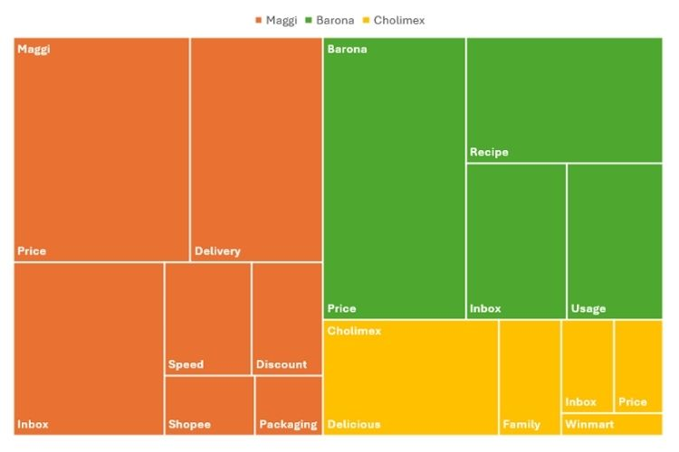
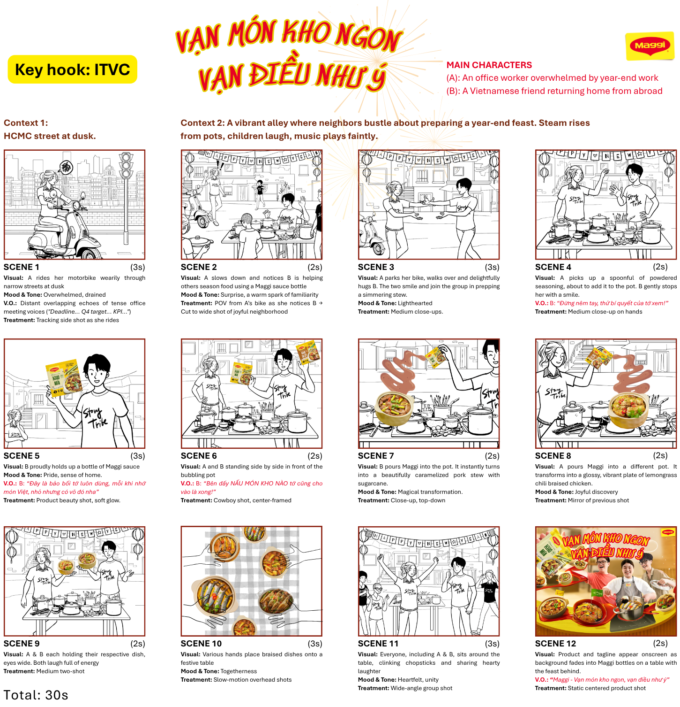

← Selected work
P13 · Academic research & campaign proposal
MAGGI Recipe Solution
From awareness to affinity: translating consumer discourse into a campaign system.
74Posts sampled
755Comments coded
82E-commerce reviews
30siTVC storyboard
Diagnosis
MAGGI had attention. The sampled conversation was still transactional.
The individual research combined social listening, qualitative coding, e-commerce review analysis, customer journey analysis and influencer/community mapping. The work identified a strategic gap between functional convenience and stronger emotional affinity.

From strategy to execution
One idea, multiple ways to cook and communicate.
The downstream team campaign developed the research into positioning, phased communication and a 30-second iTVC. The portfolio keeps the academic status explicit and does not present proposed KOLs, budget or KPIs as realised outcomes.
